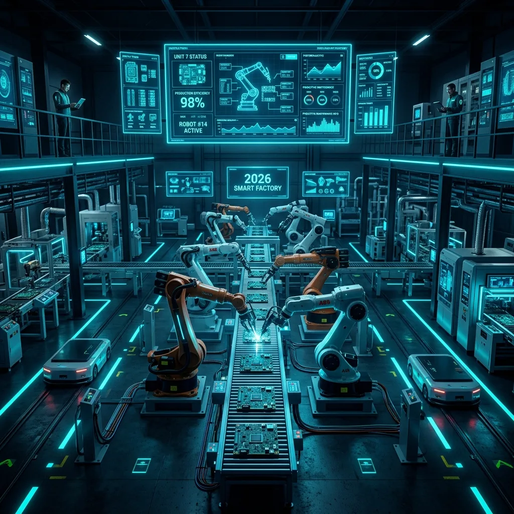

Cómo la Automatización Industrial Transformará la Manufactura Moderna en 2026: Tendencias, Robótica y Control Lógico en Saltillo
Publicado por el Equipo de Ingeniería de Robologix Automation | Coahuila, México
Resumen Ejecutivo de Automatización 2026:
En 2026, la automatización industrial ha dejado de ser solo una herramienta para aumentar el volumen de producción y se ha convertido en el pilar estratégico para la resiliencia operativa y la competitividad en el clúster automotriz e industrial de Saltillo y Ramos Arizpe. La integración de celdas robóticas avanzadas (FANUC, KUKA, ABB), controladores PLC multi-núcleo deterministas (Studio 5000 / TIA Portal), comunicación OPC UA / IO-Link y análisis predictivo en la nube permite a las plantas reducir costos de no calidad, minimizar paros de línea inesperados y adaptar sus líneas a modelos de manufactura flexible en tiempo récord.

Arquitectura de automatización convergente: Robótica, PLC y supervisión digital en planta.
1. La Revolución de la Manufactura Inteligente en 2026
El entorno industrial moderno exige una agilidad sin precedentes. Factores como relocalización de cadenas de suministro (Nearshoring en el norte de México), fluctuaciones en la demanda y la búsqueda de cero defectos en piezas complejas están acelerando la adopción de tecnologías de automatización de vanguardia.
En plantas automotrices y de metalmecánica en Saltillo, Ramos Arizpe y Derramadero, las líneas de producción ya no funcionan como islas aisladas. Hoy en día, cada celda de soldadura, prensa de estampado y estación de ensamblaje transmite métricas en milisegundos hacia la red OT/IT.
2. Tendencias Tecnológicas Clave que Están Marcando el 2026
A. Robótica Colaborativa e Integración Avanzada de Celdas
Los robots industriales tradicionales (FANUC, KUKA, Yaskawa) están complementándose con robots colaborativos (Cobots) equipados con sensores de torque y visión artificial en 3D. Esto permite operaciones de empaque, paletizado e inspección de calidad codo a codo con operadores humanos de forma 100% segura.
B. PLCs Multi-Núcleo y Procesamiento Edge
Los nuevos controladores de marcas líderes como Rockwell Automation (GuardLogix / CompactLogix 5380) y Siemens (S7-1500 / SIMATIC Edge) ejecutan tareas de control de movimiento determinista mientras procesan simultáneamente algoritmos de machine learning y comunicación MQTT/OPC UA directamente en el borde (Edge).
C. Digital Twins (Gemelos Digitales) y Puesta en Marcha Virtual (Virtual Commissioning)
Antes de instalar un solo componente físico en nave, los ingenieros de Robologix simulan el código PLC, los tiempos de ciclo robóticos y las trayectorias en entornos digitales como Process Simulate o Emulate3D. Esto reduce los tiempos de validación en planta hasta en un 60%.
3. Impacto Directo en la Eficiencia OEE y Retorno de Inversión (ROI)
La transformación hacia la automatización integral en 2026 no es un gasto, sino una inversión de rápido retorno impulsada por:
- Incremento del OEE (Overall Equipment Effectiveness): Reducción drástica de micro-paros gracias a rutinas de diagnóstico estandarizadas en pantalla HMI.
- Calidad Consistente y Trazabilidad Total: Registro automático de torques, presiones y códigos de barras vinculados al sistema MES de la planta.
- Eficiencia Energética Optimizada: Gestión inteligente de variadores VFD y servomotores que reducen el consumo eléctrico durante periodos de inactividad.
4. Cómo Robologix Automation Impulsa tu Planta en Coahuila
En Robologix Automation nos especializamos en convertir líneas de producción convencionales o con obsolescencia en celdas de automatización de clase mundial. Ofrecemos:
Programación de PLC Estandarizada
Desarrollo en Studio 5000 / TIA Portal bajo estándares IEC 61131-3 y estructuras de código modulares para diagnósticos veloces.
Integración de Celdas Robóticas
Integración llave en mano de robots de soldadura, manipulación y ensamblaje con comunicación EtherNet/IP y Profinet.
Retrofit y Modernización de Control
Migración de sistemas obsoletos (SLC 500, S7-300, PanelView Plus) a plataformas de última generación sin paros prolongados.
¿Listo para Modernizar tu Planta en 2026?
En Robologix Automation realizamos diagnósticos de automatización sin compromiso y diseñamos la arquitectura óptima para tu proceso productivo en Saltillo y Ramos Arizpe.
Solicitar Asesoría Técnica con un Especialista